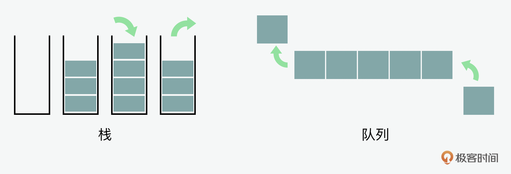
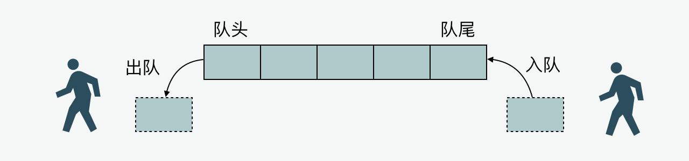
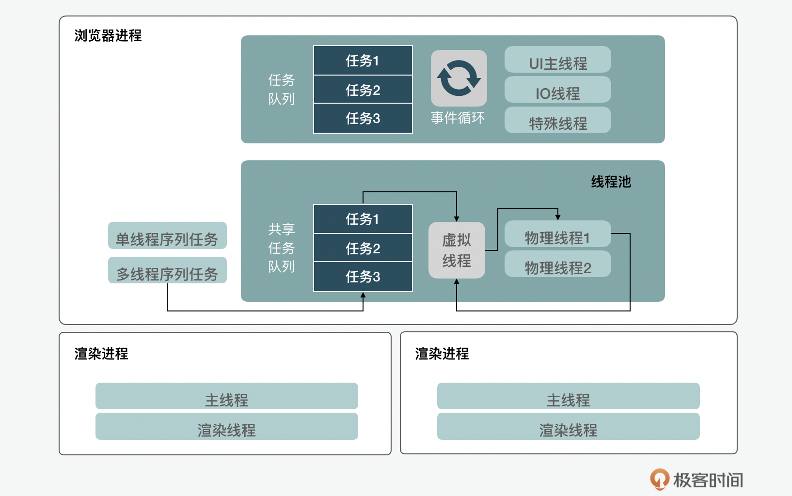
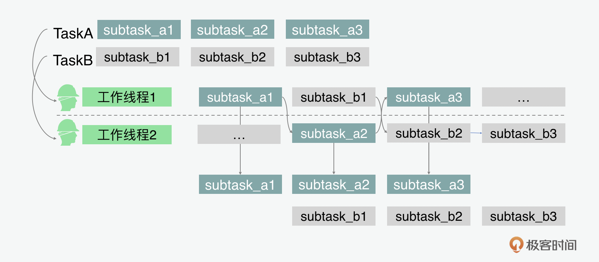
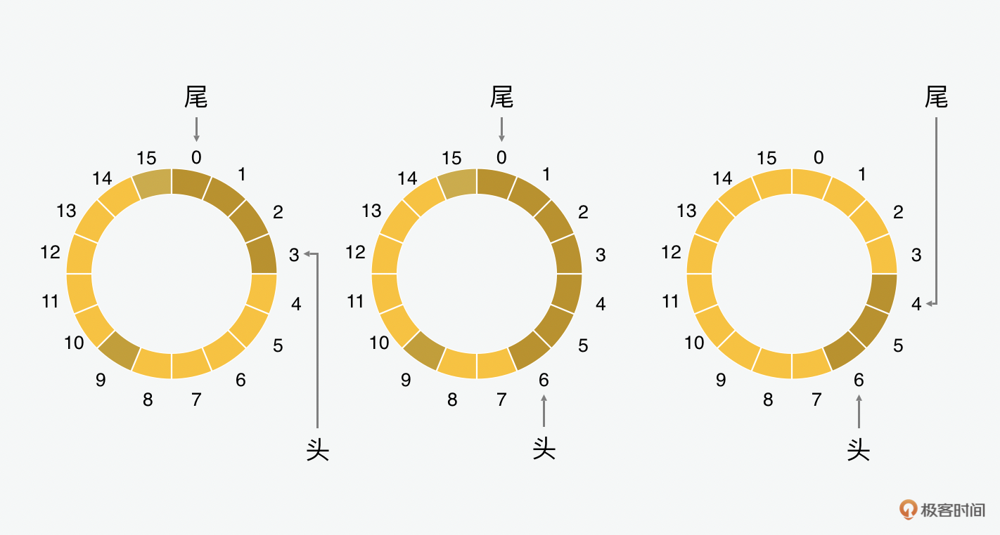
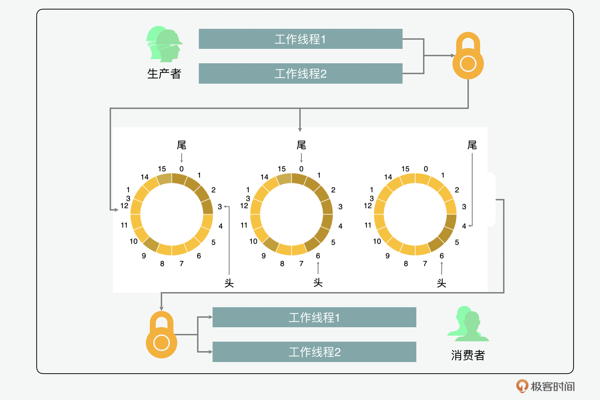

- 00 开篇词 JavaScript的进阶之路.md.html
- 01 函数式vs.面向对象：响应未知和不确定.md.html
- 02 如何通过闭包对象管理程序中状态的变化？.md.html
- 03 如何通过部分应用和柯里化让函数具象化？.md.html
- 04 如何通过组合、管道和reducer让函数抽象化？.md.html
- 05 map、reduce和monad如何围绕值进行操作？.md.html
- 06 如何通过模块化、异步和观察做到动态加载？.md.html
- 07 深入理解对象的私有和静态属性.md.html
- 08 深入理解继承、Delegation和组合.md.html
- 09 面向对象：通过词法作用域和调用点理解this绑定.md.html
- 10 JS有哪8种数据类型，你需要注意什么？.md.html
- 11 通过JS引擎的堆栈了解闭包原理.md.html
- 12 JS语义分析该用迭代还是递归？.md.html
- 13 JS引擎如何实现数组的稳定排序？.md.html
- 14 通过SparkPlug深入了解调用栈.md.html
- 15 如何通过哈希查找JS对象内存地址？.md.html
- 16 为什么环形队列适合做Node数据流缓存？.md.html
- 17 如何通过链表做LRU_LFU缓存？.md.html
- 18 TurboFan如何用图做JS编译优化？.md.html
- 19 通过树和图看如何在无序中找到路径和秩序.md.html
- 20 算法思想：JS中分治、贪心、回溯和动态规划.md.html
- 21 创建型：为什么说Redux可以替代单例状态管理.md.html
- 22 结构型：Vue.js如何通过代理实现响应式编程.md.html
- 23 结构型：通过jQuery看结构型模式.md.html
- 24 行为型：通过观察者、迭代器模式看JS异步回调.md.html
- 25 行为型：模版、策略和状态模式有什么区别？.md.html
- 26 特殊型：前端有哪些处理加载和渲染的特殊“模式”？.md.html
- 27 性能：如何理解JavaScript中的并行、并发？（上）.md.html
- 28 性能：如何理解JavaScript中的并行、并发？（下）.md.html
- 29 性能：通过Orinoco、Jank Busters看垃圾回收.md.html
- 30 网络：从HTTP_1到HTTP_3，你都需要了解什么？.md.html
- 31 安全：JS代码和程序都需要注意哪些安全问题？.md.html
- 32 测试（一）：开发到重构中的测试.md.html
- 33 测试（二）：功能性测试.md.html
- 34 测试（三）：非功能性测试.md.html
- 35 静态类型检查：ESLint语法规则和代码风格的检查.md.html
- 36 Flow：通过Flow类看JS的类型检查.md.html
- 37 包管理和分发：通过NPM做包的管理和分发.md.html
- 38 编译和打包：通过Webpack、Babel做编译和打包.md.html
- 39 语法扩展：通过JSX来做语法扩展.md.html
- 40 Polyfill：通过Polyfill让浏览器提供原生支持.md.html
- 41 微前端：从MVC贫血模式到DDD充血模式.md.html
- 42 大前端：通过一云多端搭建跨PC_移动的平台应用.md.html
- 43 元编程：通过Proxies和Reflect赋能元编程.md.html
- 结束语 JavaScript的未来之路：源于一个以终为始的初心.md.html
- 捐赠
16 为什么环形队列适合做Node数据流缓存？
你好，我是石川。
前面几讲讲完了栈这种数据结构，我们再来看看队列（queue）。队列对于你来说，可能不算是一种陌生的数据结构，和栈相反，列队通常遵循的是先进先出（FIFO，First In, First Out）的原则。你可以把它想象成在咖啡厅买咖啡时要排的队，基本是先到先得，最后来的最后买到，不能插队。如果你强行插队的话，那每个人的排队时长都会打乱。

只是实现一个队列并不复杂，重要的是，你要理解队列在编程中的应用。既然我们在讲JS，就举几个身边的例子，比如我们的浏览器就是通过引擎来做线程和任务的管理。在使用Node的应用中，环形队列可以用来做数据流的缓存。这一讲，首先我们快速地了解下队列的核心，然后通过它在JS引擎了解它们的使用场景，最后我们通过学习一种特殊的环形队列来解答开篇的问题，就是为什么环形队列适合用来缓存数据流。
如何实现队列和双队列
首先，我们来看看如何实现一个简单的队列。数据结构中队列的核心思想和我们排队买票看电影一样，关键是谁排在前面，谁就可以先买到票。和排队一样，在数据结构中，我们可以有入队、出队的概念。入队（enqeue），顾名思义就是在队伍后面加了一个人排队。这里的实现和我们看的栈里面的入栈是类似的，所以也可以用push来完成。下面我们再来说说出队，按照先入先出的规则，排在最前面的人买完票了以后，就会出队（dequeue）。它的实现可以通过JavaScript中自带的shift，通过shift，我们可以去掉一个数组里面最开头的一个元素。

除了队列，还有一个概念是双队列（deque）。虽然说通常我们排队的时候，都是遵循先进先出的规则，但是在有些特殊的情况下，也会有特例。比如大家在排队等车，看到一位女士带着很小的宝宝在大热天高温下等待，如果一队的人同意的话，大家一般会让她们排到前面。那么在JavaScript中呢，同样有一个unshift()的方法可以用来做到插队，我们在下面例子里把它叫做dequeAdd。还有另外一种情况就是如果有的人在队尾等不及了，也有可能离开，这样的话我们可以借用弹出栈的pop()来实现，在下面例子中，我们可以管它叫dequeRemove吧。
在JavaScript里面，我们可以通过下面的方式来实现一个队列。
class Queue {
constructor () {
this.queue = [];
}
enqueue(item) {
return this.queue.push(item);
}
dequeue() {
return this.queue.shift();
}
dequeAdd(item) {
return this.queue.unshift(item);
}
dequeRemove(item) {
return this.queue.pop(item);
}
peek() {
return console.log(this.queue[0]);
}
}
通过队列看浏览器任务管理
下面我们再来看看Chrome浏览器是如何通过队列来实现线程管理的。首先我们来了解下进程（process）和线程（thread）分别是什么，之间是什么关系。我们拿Chromium来举例，Chromium用的是多进程的架构（multi-process architecture）。我们在浏览器中每当打开一个新页面的时候，就是一个新的浏览器进程。
在一个浏览器进程里，会有多个线程。Chromium中有两个核心线程，一个是主线程，另外一个是IO线程。因为浏览器是面向前端用户的，所以对于它的架构设计来说，最主要的目标是让主线程和IO线程可以快速响应。为了达到这个目的，就要把阻塞IO或复杂运算分给其它的线程去处理，线程间通信问题通过消息传递来解决。
所以可以说Chromium用的是一个高并发，但不算是高并行的架构。对于页面加载的脚本中要执行的任务，会采用任务队列的方式通过事件循环给到UI主线程。如果问题是主线程可以解决的，就会处理，如果处理不了的，就会给到IO线程或特殊线程来处理，处理的结果会通过消息通信的方式给到主线程。
在浏览器进程中，除了主线程、IO线程和特殊线程外，还有一个用来处理通用任务的线程池。线程池有一个共享的任务队列。我们知道，在处理高并发时，人们通常通过锁结构来确保线程安全，而在Chromium线程管理当中，并不提倡用锁的结构，而是提倡序列或虚拟线程管理的概念。因为在Google看来，序列本身就带有线程安全性。这是怎么做到的呢？因为在虚拟线程管理中，只有当一个任务执行完，下一个任务才有可能被分配到线程池中的另一个工作线程来执行，所以下一个任务肯定是基于上一个任务的结果来执行的。所以虽然对于不同的工作线程来讲，它们之间的工作是并行的，但是对于一组需要串行处理的任务来说，它们的执行是有先后顺序的。

这里我们可以打一个比方，比如我们在项目管理中，会有一个需求池，这个需求池就是我们的任务队列，而虚拟线程管理就如同一个项目经理。
项目经理的工作是根据任务和团队，来制定项目计划。比如根据需求，执行中有两个任务分别是设计和开发，这两个任务需要按顺序来，开发团队说你的设计UI没出来，我是不会开始写代码的，这时，作为项目经理，你会把这两个任务作为串行任务，也就是任务2的开始基于任务1的结束。虽然这解决了线程安全问题，但是同时项目经理也清楚投入到项目的生产力是有限的，怎么能通过生产关系的优化让资源更有效的被利用起来呢？
这时我们可以用迭代的方式。设计团队做迭代1中的设计，然后确保完成再交给开发团队来开发。这时当开发团队在做迭代1的开发时，设计团队已经在继续做迭代2的设计了。对于迭代1中设计和开发这两个任务来说，它们是按照序列串行的。同时，对于两个团队来讲，他俩的工作是并行的。这样既降低了项目风险，又可以做到一定程度的并发。

那么这样是说Chromium就完全不支持锁了吗？也不是。那什么时候可以用锁结构呢？同样举个例子，这就好比产品和研发两个员工（worker thread），产品宣讲完业务逻辑，研发在开发过程中，发现当时讨论的流程图有个问题，两个人需要同时修改一份流程文档，这个时候为了避免内容被相互覆盖，两个人商量好了，应该只有一个人去改。所以在Chromium中，通常当有多个线程（worker thread）可以访问一个数据资源，但是同一时间只允许一个线程来访问这些资源或数据的时候，会用到锁。在Chromium当中使用的是互斥锁（mutex）。
环形队列和线程间数据传递
说完了常见的队列，我们再来看在一种特殊的队列，就是环形队列。一个环形队列是首尾相连的。它也叫做环形缓冲区（ring buffer），可以用于进程或线程之间的数据传递。
回答开篇的问题：为什么环形队列适合做Node数据流缓存？你可能会问这样的队列为什么会有用？那是因为它最核心的好处是当一个数据元素被用掉后，其余数据元素不需要移动其存储位置。我们来看看它是怎么做到这一点的。对于一个环形队列来说，我们一般需要两个指针，一个是头指针，一个是尾指针。头指针指向的是下一个要加入的数据，尾指针指向下一个要读取的数据。当数据被读取时，我们就增加尾指针；当数据被写入的时候，我们就增加头指针。
举个例子，假设我们有一个16位的缓冲，第一步，我们加入了4位数据，头指针就移动到了3。如果再加3个的话，头指针就移动到了6。如果这时，我们读取了前4个，那么尾指针就会到4。

用一个形象的比喻，大家如果在美国的一些餐厅吃过饭，可能会见过一个点餐轮盘。来餐厅的顾客一般会把想吃的东西写在纸上，然后放到轮盘上，厨师会按照顺序从轮盘上把点餐的菜单拿下来，然后来做饭。这就很像是一个环形队列。
那么在程序中这种环形队列如何实现呢？从实现的角度，一般会建立两个数组，一个是原数组用来定义环形队列的属性和方法，第二个是实际用来存放数据的环形队列数组。在原数组里面，主要存放3个关键属性，分别是头指针、尾指针和环形队列长度。同时，包含几个核心方法：原数组中属性的获取和设置，以及环形队列数组中数据的读和写。通过这种方式，就可以实现一个环形队列了。
下面我们可以来看看它在缓存数据流中的应用。这种环形队列通常会和“生产者，消费者”模式一起用，也通常会加一个互斥锁到环形队列的读、写方法里，用来实现互斥访问。如下图所示，我们可以看到有4个工作线程。2个是生产者，2个是消费者。 生产者负责写入数据，消费者读取数据。通过加锁的方式，在同一时间，只有一个生产者可以写入，在读的时候，也只有一个消费者可以读取。

在数据流这种大量数据持续进入到列队中，再从队列中取出做缓存处理的情况下，使用环形队列就大大增加了生产者和消费者之间协同合作的效率。
总结
在这一讲当中，我们通过对队列的原理介绍，学习了它在浏览器线程管理中的应用；之后通过对环形队列的的原理介绍，学习了它在缓存数据流中的应用。数据流缓冲在很多应用中都有体现，除了进程管理外，在网络和文件系统中，都会用到数据流缓冲。在网络中，字节数据都是按照包的大小分成块儿来传输的；在文件系统中，数据块儿都是根据内核的缓冲大小分成块儿来处理的。所以无论是HTTP的数据请求和反馈，还是文件到目的地的传输，这些数据的传输都会用到环形队列缓冲。
思考题
在我们用互斥锁的时候，会发现它有一个劣势，就是共享资源，也就是环形队列每次只给一个线程使用，其它线程阻塞，用完后再把资源转让给其它线程，这在某种意义上是一个悲观锁。除此之外，还有另外的一种方式是原子操作，它是针对某个值的单个互斥操作。你知道如何通过原子操作来实现环形队列缓冲吗？
期待在留言区看到你的分享，我们一起交流讨论。另外，也欢迎你把今天的内容分享给更多的朋友。我们下期再见！
© 2019 - 2023 Liangliang Lee. Powered by gin and hexo-theme-book.